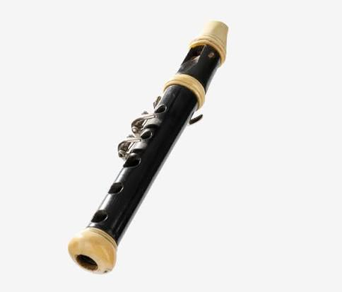
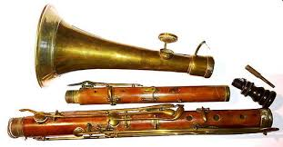

Fabrication de
Tenora et FlabiolInstruments emblématiques de la cobla catalane


⟹ Facture instrumentale du Roussillon ⟸
La tenora et le flabiol appartiennent à deux histoires très différentes qui se rejoignent dans la cobla moderne. Le flabiol plonge ses racines dans l'ancien couple européen « flûte à une main et tambour », tandis que la tenora est le résultat, au XIXe siècle, de la transformation des anciennes xeremies et tarotes catalanes. Leur réunion raconte à elle seule le passage des petites formations populaires de danse à l'orchestre de sardane devenu emblématique de la musique catalane.

Le flabiol est le plus ancien des deux. Des formes de flûtes jouées d'une seule main avec un tambour sont attestées en Europe depuis le Moyen Âge, et l'iconographie catalane en montre dès le XIIIe siècle. Pendant des siècles, le flabiolaire peut à lui seul fournir mélodie et rythme : la main gauche joue la petite flûte tandis que la droite frappe le tambour. Cette autonomie explique son rôle dans les danses, processions, fêtes, accompagnements de géants et autres manifestations populaires.
À partir de la fin du XVIIIe siècle, le flabiol et le tamborí prennent place dans les petites cobles traditionnelles, notamment la cobla de tres quartans, aux côtés de la cornemuse catalane — le sac de gemecs — et d'une xeremia ou tarota. Ces formations n'ont pas encore l'effectif fixe de la cobla actuelle : leur composition varie selon les lieux, les musiciens disponibles et les usages. Elles constituent néanmoins le terreau à partir duquel la grande transformation instrumentale du XIXe siècle va s'opérer.
La tenora naît de cette volonté d'obtenir un instrument à anche double plus étendu, plus juste et plus puissant que les anciennes tarotes. Le facteur et musicien roussillonnais Andreu Toron (1815-1886), installé à Perpignan, joue un rôle décisif dans son perfectionnement au milieu du XIXe siècle. Son « hautbois-ténor » associe le principe de la xeremia catalane aux progrès de la facture savante : corps de bois tourné, perce adaptée, anche double, mécanisme de clés et grand pavillon métallique. Cette combinaison produit le timbre ample, nasal et pénétrant qui deviendra la signature de la tenora.
La rencontre avec Josep Maria « Pep » Ventura (1817-1875), musicien de Figueres, est déterminante. Ventura exploite les possibilités de la nouvelle tenora, lui confie une place mélodique centrale et participe à la transformation de la cobla. Au milieu du XIXe siècle, l'ancienne formation dominée par flabiol, cornemuse et tarota s'ouvre aux cuivres issus des fanfares et au contrebassiste. La cobla moderne finit par se stabiliser autour de onze musiciens jouant douze instruments : flabiol et tamborí pour un seul interprète, deux tibles, deux tenores, deux trompettes, un trombone, deux fiscorns et une contrebasse.
Cette évolution accompagne celle de la sardane elle-même. La sardane longue, développée au XIXe siècle, offre aux compositeurs des formes plus vastes et demande une formation capable de soutenir la danse en plein air tout en développant une véritable écriture orchestrale. La tenora devient alors l'une des grandes voix solistes de la cobla. Sa tessiture et son timbre lui permettent de porter les thèmes au-dessus de l'ensemble, tandis que le tible occupe le registre plus aigu et que les cuivres donnent profondeur et puissance à l'orchestre.

Le flabiol, loin de disparaître lors de cette modernisation, se transforme lui aussi. Les modèles traditionnels, souvent simples et sans clés, coexistent progressivement avec le flabiol de cobla, construit en plusieurs pièces et muni de clés métalliques facilitant les chromatismes. Cette évolution s'accélère dans la seconde moitié du XIXe siècle, lorsque les exigences du répertoire deviennent plus importantes. Le tamborí se réduit parallèlement : dans la cobla moderne, les instruments graves assurent une grande part de la pulsation, ce qui permet au petit tambour de conserver surtout une fonction de ponctuation et de signal.
Le rôle du flabiolaire reste pourtant hautement symbolique. C'est lui qui ouvre traditionnellement la sardane par l'introit, bref appel soliste immédiatement reconnaissable, et qui intervient également dans le contrapunt. Cette survivance d'un instrument médiéval au cœur d'un orchestre réorganisé au XIXe siècle constitue l'une des singularités les plus fortes de la cobla.
La facture de ces instruments exige des compétences très spécialisées. Pour la tenora, le facteur doit maîtriser le choix et le séchage du bois, le tournage des différents corps, la précision de la perce intérieure, le perçage des cheminées, l'ajustage du clétage, le travail du pavillon métallique et surtout l'équilibre acoustique général. Quelques dixièmes de millimètre peuvent modifier l'intonation ou la réponse de l'instrument. L'anche double, façonnée dans le roseau, est elle-même un élément déterminant et reste étroitement liée aux habitudes du musicien.
Le flabiol demande une précision comparable à une échelle plus réduite : position des trous, géométrie du canal d'air, biseau, perce et éventuelles clés conditionnent son émission et sa justesse. Historiquement, des bois tels que le buis, le jujubier ou l'ébène ont été employés, tandis que des instruments plus rustiques pouvaient être réalisés en roseau ou dans d'autres bois disponibles localement.
Aux XXe et XXIe siècles, la tenora et le flabiol ont dépassé le seul cadre de la place de village. Ils sont enseignés, étudiés par les organologues, conservés dans les musées et utilisés dans des œuvres de concert. Des facteurs contemporains poursuivent leur fabrication et améliorent avec prudence mécanique, stabilité et justesse sans effacer leur identité sonore. Leur histoire demeure ainsi celle d'une tradition vivante : des instruments populaires anciens transformés par l'innovation artisanale, puis devenus des marqueurs majeurs de la culture musicale catalane.
La tenora, c'est la voix de la Catalogne : rauque et tendre à la fois.
— Dicton catalanAprès Andreu Toron, dont l'atelier perpignanais forme plusieurs générations d'ouvriers facteurs, d'autres noms marquent l'histoire de la facture instrumentale catalane : Soldevila, Llanta, Pardo ou Reig pour le flabiol, Vallote et Brisillac pour les ateliers perpignanais du XIXe siècle. Ce savoir-faire, longtemps transmis de maître à apprenti, reste aujourd'hui l'affaire d'un tout petit nombre de facteurs spécialisés, en Roussillon comme en Catalogne du Sud.
Fabriquer une tenora, c'est donner un corps de bois et de métal à la voix même de la sardane.
— Tradition orale des facteurs catalansLa transmission de ce savoir-faire passe aujourd'hui par les cobles elles-mêmes, les écoles de musique traditionnelle et les grands rassemblements — les aplecs — où se croisent musiciens, danseurs et artisans. Quelques ateliers du Roussillon continuent de restaurer et d'entretenir les instruments anciens, perpétuant un geste directement hérité de Toron et de ses contemporains.
Perpignan berceau de la tenora, la ville conserve la mémoire d'Andreu Toron et de ses ateliers, ainsi qu'un tissu associatif sardaniste toujours actif.
Céret son musée de la musique présente une collection remarquable des instruments de la cobla, tenora et flabiol en tête.
Barcelone le Museu de la Música conserve plusieurs tenoras historiques, dont celle ayant appartenu à Pep Ventura lui-même.
Les aplecs de sardanes tout l'été, ces rassemblements populaires du Roussillon et de Catalogne offrent l'occasion d'entendre coblas et instruments traditionnels en plein air.